load(url('https://github.com/hungtong/DS-01-101/raw/refs/heads/main/dataset/l4b_data.rdata'))4B: Examining Numerical Variables
Data Sets
Topics
Basic variable types
Histogram
Mean and median
Quartiles and five-number summary
Interquartile range (IQR), variance, and standard deviation
Box plot
Scatter plot and correlation
Basic Data Types
- Recall that a variable can be numerical or categorical.

A numerical variable represents numbers that are meaningful to add, subtract, or take averages.
A categorical variable refers to specific categories that describe a characteristic.
Histogram
Histogram is like a bar plot for numerical data, but there is no separation between the bars. Numbers are divided into bins and the frequency distribution of these bins is displayed.
From a histogram, we can learn about the data distribution
- Shape: Is it symmetric, left-skewed, or right-skewed? Is it unimodal or multimodal? How many peaks?
- Typical Value: Where do most data values seem to concentrate?
- Spread: What is the approximate range of the data? How far are data points from the typical value?
In a symmetric distribution, the left tail approximately mirrors the right tail.

- A data distribution is said to be left-skewed if its tail extends further to the left.
- Example: age of retirement, lifetime.
- A distribution is said to be right-skewed if its tail extends further to the right.
- Example: housing prices, salaries.
- Note that skewness is about the skinny tail

Previous distributions with only one peak are called unimodal.
A distribution with exactly two peaks is called bimodal.

When a distribution has more than one peak, it is called multimodal.
 {width=“397”, fig-align=“center”}
{width=“397”, fig-align=“center”}
Histogram in R
Histogram can be generated using the
hist()function. The number of bins will be automatically determined by R, but we can also adjust by changingbreaks.Recall common graphical parameters in base R plotting:
col- add color to the plotmain- main title labelxlab- label for x-axisylab- label for y-axisxlim- x-axis rangeylim- y-axis rangecex.main- size of main titlecex.lab- size of axis labelscex.axis- size of tick labels
💻 Hands-On
The bus_driver data set was collected from bus drivers employed by public corporations. Each data point gives the number of traffic accidents in which each bus driver was involved during a 4-year period. Obtain the histogram of this data set and comment on the data distribution.
Answer
The data distribution is right-skewed. A smaller number of accidents is more common, which is a good thing.
hist(
bus_driver,
main = '',
col = 'darkslategray3',
xlab = 'Accidents by Bus Drivers'
)
💻 Hands-On
The math_sat data set contains the math-portion scores of the SAT exam in 2008. Each score is between 200 and 800. Obtain the histogram of this data set and comment on the data distribution.
Answer
The data distribution is symmetric. Most people get scores from 450 to 550. Very low or very high scores tend to be rare.
hist(
math_sat,
main = '',
col = 'darkorange',
xlab = 'Math SAT Score'
)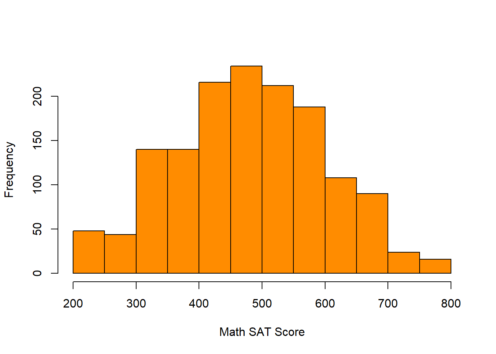
💻 Hands-On
The lifetime data set contains ages at death for a group of individuals. Obtain the histogram of this data set and comment on the data distribution.
Answer
The data distribution is left-skewed. Deaths are more common when individuals are older rather than younger, which is sensible in practice.
hist(
lifetime,
main = '',
col = 'seagreen3',
xlab = 'Age at Death'
)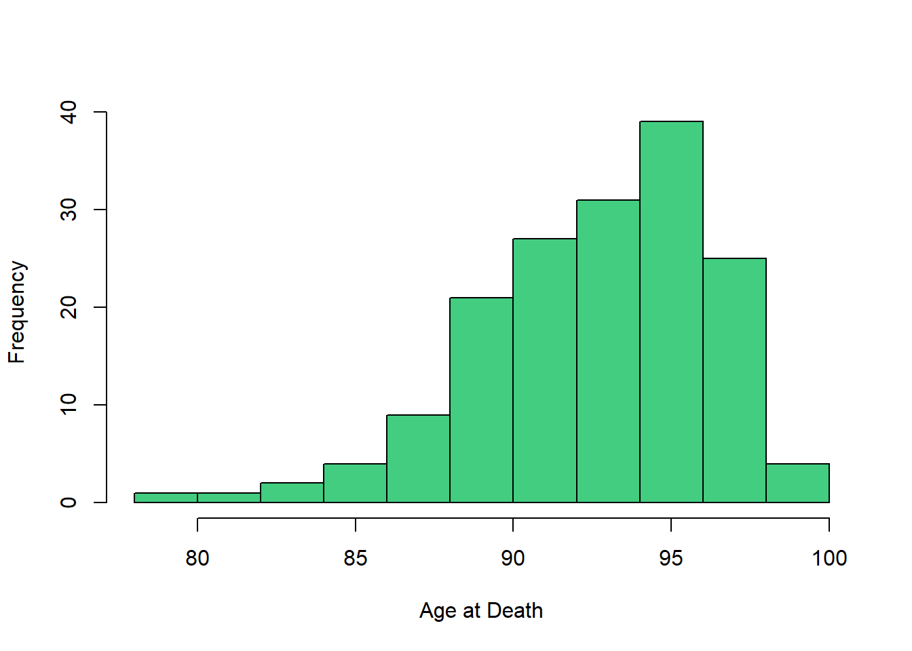
Mean and median
When describing numerical data, it is common to report representative value(s), where representative implies that the data tend to be centered or located around these particular value.
When the data distribution is unimodal, common measures to describe the data are:
- Mean
- Median
- Mode (more useful for categorical data)
The mean is the average value of the data. Every observation has an equal contribution to the calculation of the mean, i.e., center of “mass.”
\[ \bar{x} = \dfrac{x_1 + x_2 + \dots + x_n}{n} \]
The median is the middle value when the data are arranged in ascending order. It is also known as the \(50\)th percentile or the second quartile \(Q_2\).
The median divides the data into two parts: approximately half (\(50\%\)) less than the median and approximately the other half (\(50\%\)) greater than the median.

- Calculating the mean is relatively straightforward, while calculating the median requires sorting the data. However, the mean is easily influenced by skewness and outliers compared to the median.

- When the data distribution is multimodal, the mean and median of each sub-population should be reported instead.

Quartiles and five-number summary
- Quartiles are 3 specific percentiles that divide a dataset into four parts, with each part containing approximately one-fourth, or \(25\%\), of the observations.
- \(Q_1\) - First quartile or \(25\)th percentile
- \(Q_2\) - Second quartile or \(50\)th percentile or the median
- \(Q_3\) - Third quartile or \(75\)th percentile

Quartiles are robust to skewness and outliers.
A five-number summary refers to the following \(5\) numbers to summarize the data
- Minimum (smallest value)
- \(Q_1\) - First quartile or \(25\)th percentile
- \(Q_2\) - Second quartile or \(50\)th percentile or the median
- \(Q_3\) - Third quartile or \(75\)th percentile
- Maximum (largest value)
Interquartile range (IQR), variance, and standard deviation
Variability is also known as spread. Variability refers to how much the data values are spread out.
- Interquartile range (IQR)
- Variance
- Standard deviation
The interquartile range (IQR) is the difference between the third and first quartiles.
The variance is a measure of variability that aims to quantify how much the data values are spread from the mean. The units associated with the variance are squared and the variance must be positive.
\[ s^2 = \dfrac{\sum_{i = 1}^n (x_i - \bar{x})^2}{n - 1} \]
- The standard deviation is defined to be the positive square root of the variance.
\[ s = \sqrt{s^2} \]
Unlike the variance, the standard deviation is measured in the same units as the data, which is easier to interpret. The standard deviation must also be positive.
The standard deviation roughly describes how far away typical observations are from the mean.
Summary statistics in R
Summary statistics for a data set can be obtained as follows:
mean()gives the sample meanmedian()gives the sample medianmin()gives the minimum valuemax()gives the maximum valuerange()gives a vector containing the minimum and maximumsummary()gives the five-number summary and sample meanIQR()gives the interquartile rangevar()gives the sample variancesd()gives the sample standard deviation
💻 Hands-On
Find summary statistics of the bus_driver, math_sat, and lifetime data sets.
Answer
Here, we show summary statistics of the bus_driver data set only. Those of the math_sat and lifetime can be obtained in the same fashion. Recall the histogram of bus_driver
hist(
bus_driver,
main = '',
col = 'darkslategray3',
xlab = 'Accidents by Bus Drivers'
)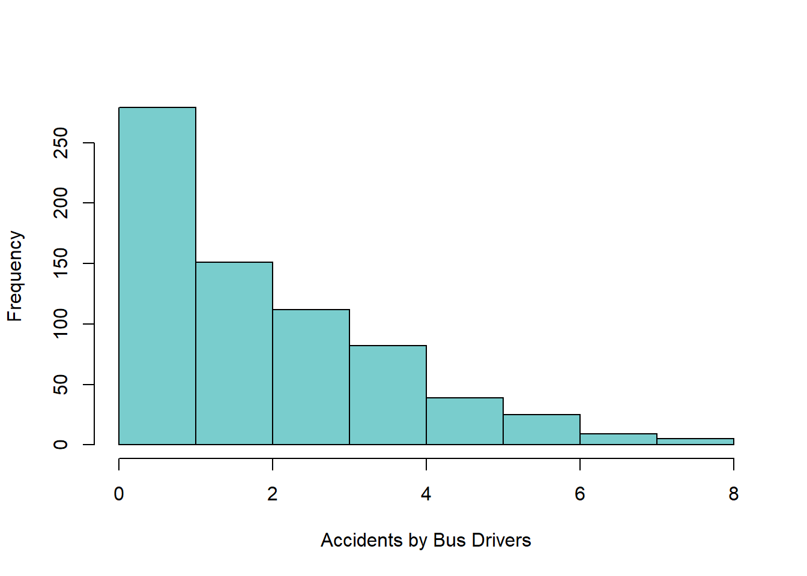
Note that since bus_driver is right-skewed, we would expect the mean to be greater than the median because the mean is more sensitive to skewness and is thus dragged towards the skinny tail. In contrast, lifetime is left-skewed, we would expect the mean to be smaller than the median (the skinny tail is on the left). Since lifetime is symmetric, the mean and median are about the same.
mean(bus_driver)[1] 2.257835median(bus_driver)[1] 2min(bus_driver)[1] 0max(bus_driver)[1] 8range(bus_driver)[1] 0 8summary(bus_driver) Min. 1st Qu. Median Mean 3rd Qu. Max.
0.000 1.000 2.000 2.258 3.000 8.000 IQR(bus_driver)[1] 2var(bus_driver)[1] 3.070374sd(bus_driver)[1] 1.752248Box plot
Box plot is a graphical display of the data based on a five-number summary.
From a box plot, we can learn about the data distribution
- Typical Value: The median
- Spread: The range and interquartile range (IQR) of the data. The larger the interquartile range (IQR), the higher variability in the data
- Outliers: Potential outliers are marked automatically

Box plot and histogram should both be made to complement each other.
Side-by-side box plots are used to compare the distribution of a numerical variable across different categories.

Box plot in R
💻 Hands-On
Obtain the box plots of the bus_driver, math_sat, and lifetime data sets.
Answer
The box plots of the bus_driver, math_sat, and lifetime data sets can be obtained using the boxplot() function. The generated box plot is vertical by default, so setting horizontal = TRUE will generate horizontal box plot instead. Note that pch = 16 will mark outliers with solid dots.
boxplot(bus_driver, horizontal = TRUE, col = 'darkslategray3', pch = 16)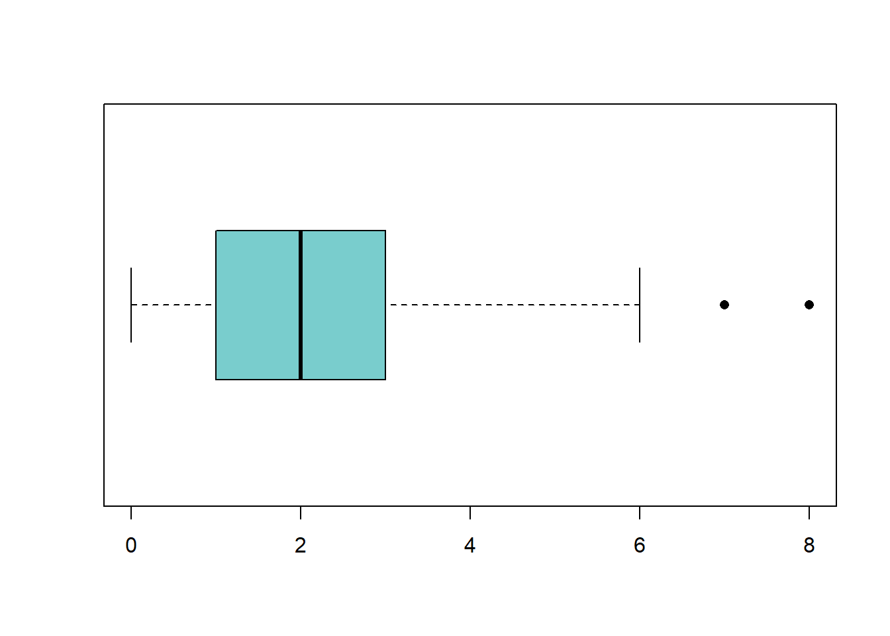
boxplot(math_sat, horizontal = TRUE, col = 'darkorange', pch = 16)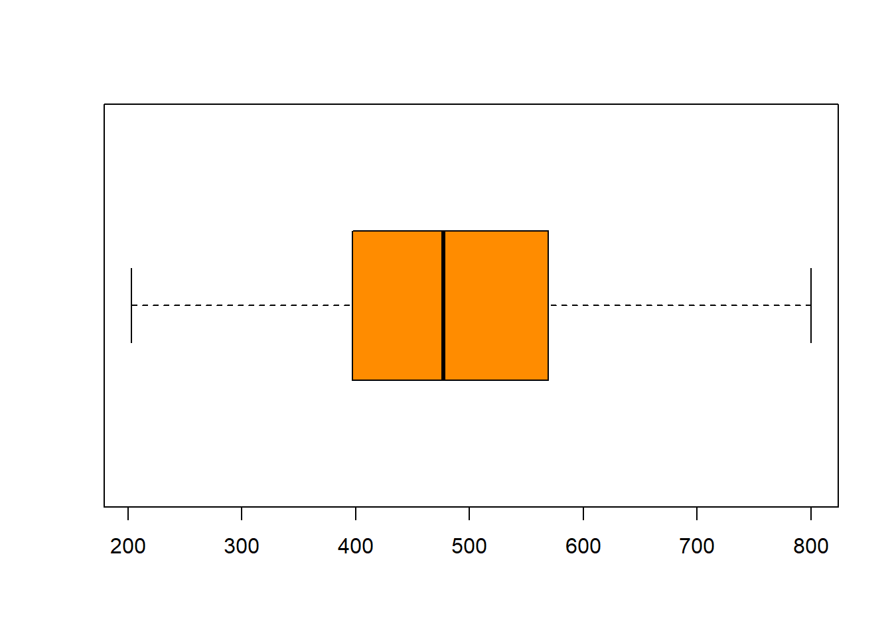
boxplot(lifetime, horizontal = TRUE, col = 'seagreen3', pch = 16)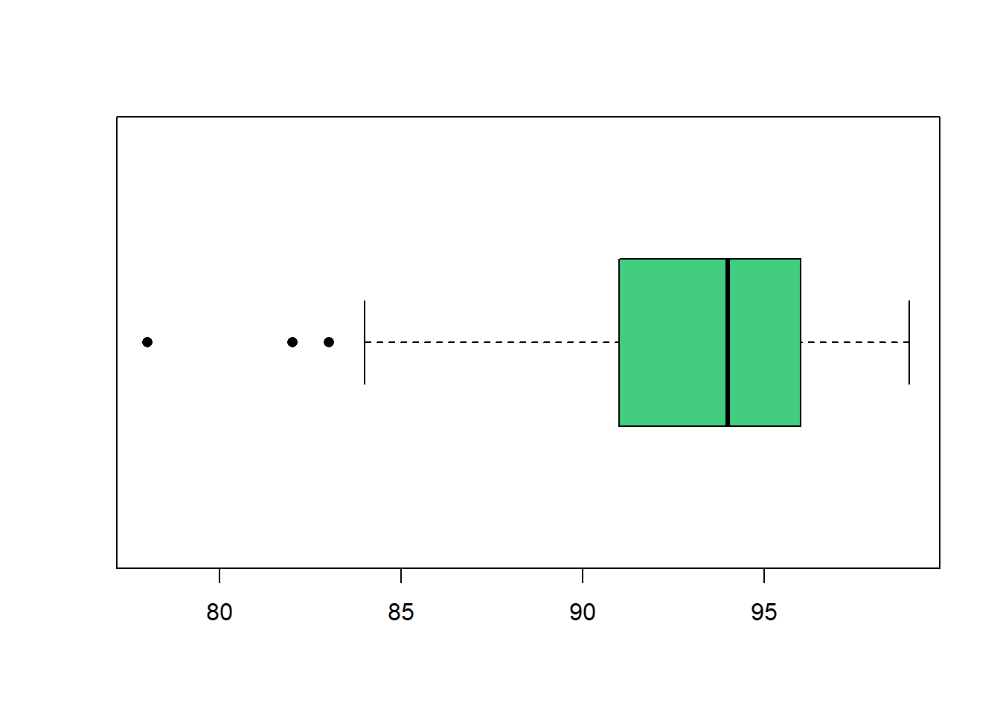
💻 Hands-On
Obtain the side-by-side box plots of the iris data set to compare different species of flowers.
Answer
We can look at the first few observations of iris to get an idea about the data set.
head(iris) Sepal.Length Sepal.Width Petal.Length Petal.Width Species
1 5.1 3.5 1.4 0.2 setosa
2 4.9 3.0 1.4 0.2 setosa
3 4.7 3.2 1.3 0.2 setosa
4 4.6 3.1 1.5 0.2 setosa
5 5.0 3.6 1.4 0.2 setosa
6 5.4 3.9 1.7 0.4 setosaThere are 3 species of iris flowers.
table(iris$Species)
setosa versicolor virginica
50 50 50 The side-by-side box plots of Sepal.Length show that setosa flowers tend to have the smallest sepal length, whereas virginica flowers tend to have the largest sepal length.
boxplot(Sepal.Length ~ Species, data = iris,
col = c('mistyrose', 'plum', 'purple'),
ylab = 'Sepal Length')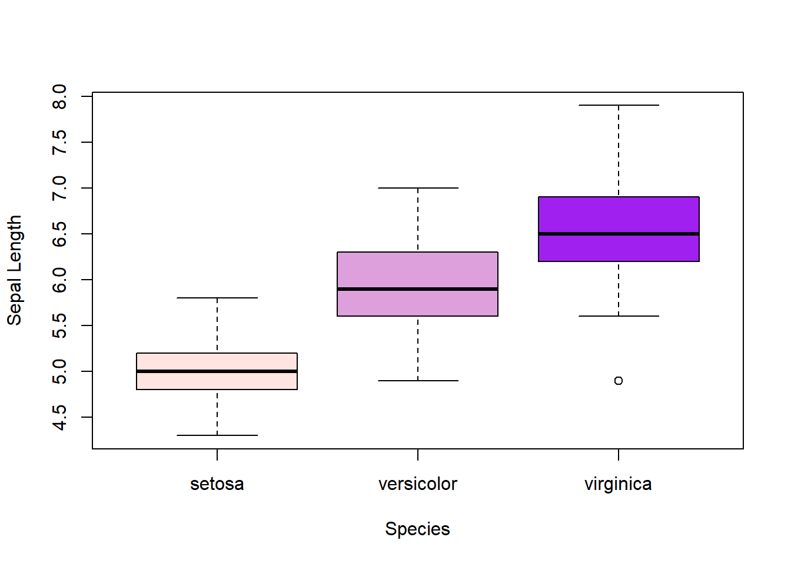
In contrast, the side-by-side box plots of Sepal.Width show that setosa flowers tend to have the larger sepal width than virginica flowers.
boxplot(Sepal.Width ~ Species, data = iris,
col = c('mistyrose', 'plum', 'purple'),
ylab = 'Sepal Width')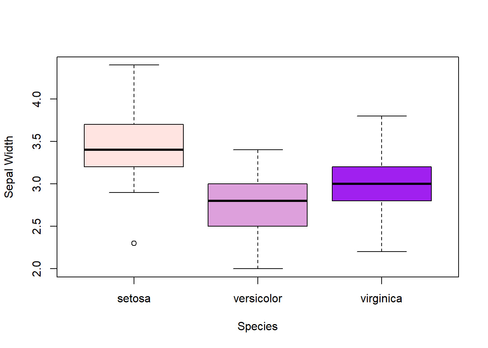
Scatter plot and correlation
- Scatter plot provides a view of the relationship between two numerical variables. One may be considered as the explanatory variable and the other one as the response.

- Different colors or point symbols can be used on a scatter plot to incorporate information from a categorical variable

- A linear relationship refers to one that can be approximated by a straight line on a scatter plot.

Correlation is a measure to quantify the strength of the linear relationship between two numerical variables. Correlation does not depend on the units of measurement.
Correlation is strictly between \(-1\) and \(1\).
- The closer to \(1\), the stronger the positive linear relationship is.
- The closer to \(-1\), the stronger the negative linear relationship is.

Scatter plot and correlation in R
- Scatter plot can be generated using the
plot()orpairs()function. - Useful graphical parameters include
cex- adjust the size of data pointspch- plotting character (point symbol)
- Correlation can be computed using the
cor()function.

💻 Hands-On
The cars data set gives speed in mph and stopping distance dist in ft of cars in 1920s. Obtain the correlation and scatter plot of speed and dist.
Answer
The correlation of speed and dist implies a strong positive linear relationship, meaning a faster speed will require the car to take longer to stop. Their scatter plot show that a straight line provides a good approximation of their relationship.
cor(cars$speed, cars$dist)[1] 0.8068949plot(cars$speed, cars$dist, cex = 1.5, pch = 18, col = 'hotpink3',
xlab = 'Speed (mpg)', ylab = 'Stopping Distance (ft)')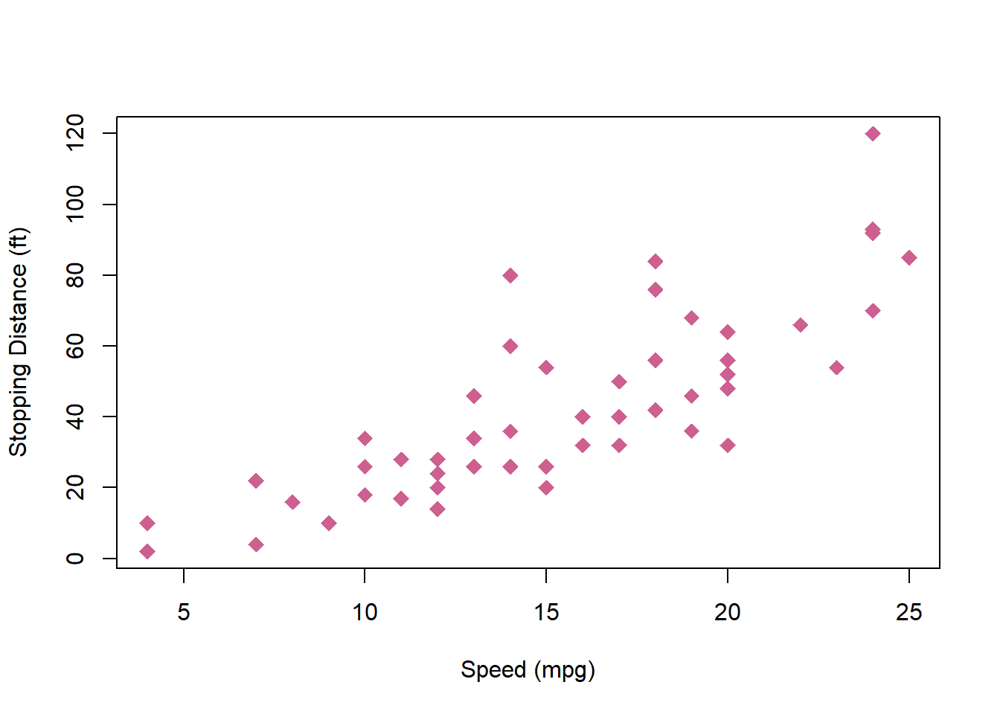
💻 Hands-On
The USArrest data set contains crime statistics for assault, murder, and rape in each of the 50 US states in 1973. It also contain the percent of the population living in urban areas. Obtain the correlation and scatter plot of variables in the data set.
Answer
The correlation matrix of USArrest shows strong positive linear relationship between Murder, Assault, and Rape crimes (to a lesser extent for Rape). UrbanPop seems to have weaker correlation with the crime measurements.
cor(USArrests) Murder Assault UrbanPop Rape
Murder 1.00000000 0.8018733 0.06957262 0.5635788
Assault 0.80187331 1.0000000 0.25887170 0.6652412
UrbanPop 0.06957262 0.2588717 1.00000000 0.4113412
Rape 0.56357883 0.6652412 0.41134124 1.0000000pairs(USArrests, pch = 16, col = 'slateblue', lower.panel = NULL)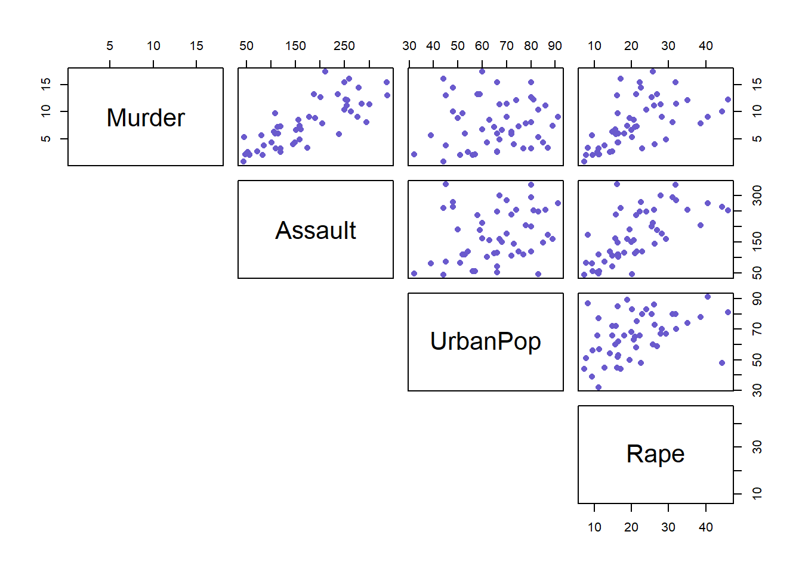
💻 Hands-On
Obtain the scatter plots of the iris data set. Use different colors and symbols to highlight different species of flowers.
Answer
A quick way to use different colors to highlight different species of flowers is
pairs(iris[, 1:4], pch = 16, col = iris$Species)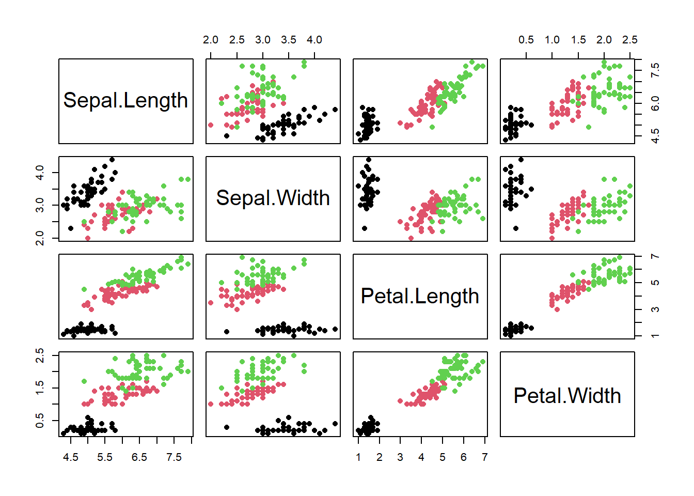
A fancier way to use custom colors and different symbols is
cols <- c('steelblue', 'tomato', 'chartreuse3')
pchs <- c(16, 17, 4)
pairs(iris[, 1:4], pch = pchs[iris$Species], col = cols[iris$Species])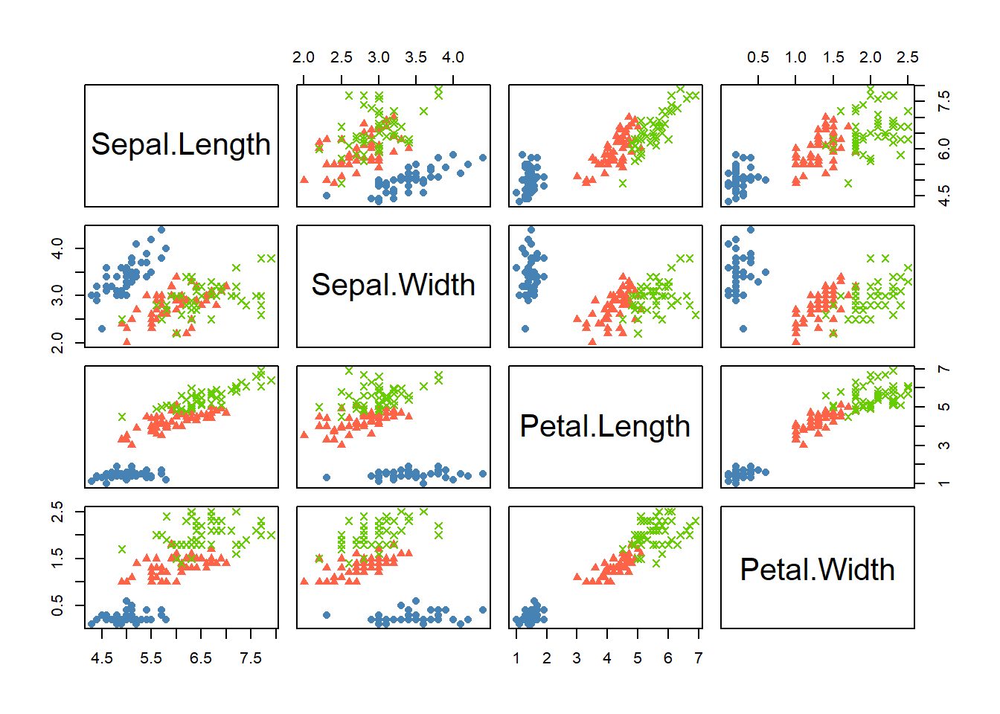